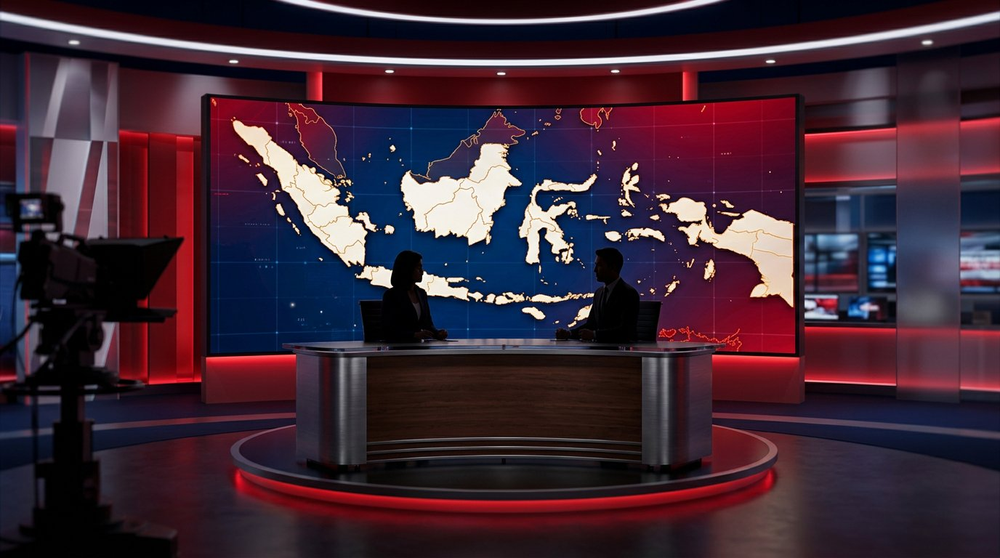

Sedang Tayang
Indonesia,
Indonesia,
dalam satu layar.
Dari kabarkota Kediri sampai puncak Bromo — berita, dokumenter, budaya, bisnis, dan podcast MBC Indonesia kini tayang live dan on-demand di MBCINDONESIA.TV.

Live Sekarang
Kabar Nusantara Petang
Edisi Jumat, 21 November 2026. Dipandu langsung dari Studio A MBC Indonesia, Kediri.
Gabung Siaran LangsungKatalog VOD
Program & Episode Terpopuler
Audio & Podcast